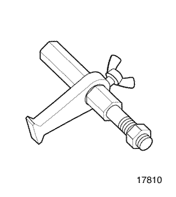
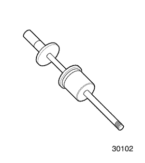

SECCIÓN 5C1
EMBRAGUE (Y4A)
Precaución: Desconecte el cable negativo de la batería antes de desmontar o instalar cualquier unidad eléctrica o cuando exista la posibilidad de que una herramienta o equipo pueda entrar en contacto con bornes eléctricos expuestos. La desconexión de dicho cable ayudará a evitar lesiones personales y daños al vehículo. La llave de contacto debe estar en posición LOCK a menos que se indique lo contrario.
ESPECIFICACIONES
Especificaciones generales
Aplicación | Descripción | Unidad | Estándar | Límite |
Disco del embrague | Tipo | - | Monodisco en seco | - |
Diámetro exterior | mm (pulg.) | 180 (7.1) | - |
Diámetro interior | mm (pulg.) | 125 (4.9) | - |
Espesor | mm (pulg.) | 7.2 (0.283) | - |
Especificaciones de apriete de la sujeción
Aplicación | N•m | Lb-pie | Lb-pulg. |
Tornillo del plato de presión | 33 - 38 | 24 - 28 | - |
Tuerca y tornillo del brazo de desembrague | 10 - 16 | 7.5 - 12 | - |
HERRAMIENTAS ESPECIALES
Tabla de herramientas especiales

 
| 09917-58010 Extractor de cojinetes de eje primario . |
| 09923-46040 Tubo de juntas de casquillo |

| 09924-17810 Mango para volantes motor |
| 09925-48220 Extractor/instalador de casquillos . |

| 09925-98210 Instalador de cojinetes de eje primario . |

| 09930-30102 Eje deslizante |
| 09943-88211 Instalador de cojinetes y casquillos . |
| DW110-021 Fijación del soporte del conjunto del motor . |
| DW210-010 Guía para centrar embragues |
DIAGNÓSTICO
Diagnóstico general
Estado | Causa probable | Medida correctora |
El embrague patina | - Mal ajuste del cable del embrague
| - Ajuste el cable del embrague.
|
- Superficie del disco de embrague desgastada o manchada de aceite.
| - Sustituya el disco del embrague.
|
- Superficie del volante motor, plato de presión desgastada o manchada de aceite.
| - Sustituya el plato de presión, volante motor.
|
- Resorte de diafragma debilitado o dañado.
| - Sustituya el plato de presión.
|
- Cable del embrague oxidado
| - Sustituya el cable del embrague.
|
Arrastre de embrague | - Mal ajuste del cable del embrague
| - Ajuste el cable del embrague.
|
- Resorte de diafragma debilitado o desgastado.
| - Sustituya el plato de presión.
|
- Estrías del eje primario o del disco de embrague desgastadas u oxidadas.
| - Sustituya el eje primario o el disco del embrague
|
- Disco del embrague excesivamente suelto.
| - Sustituya el disco del embrague.
|
- Disco del embrague desgastado.
| - Sustituya el disco del embrague.
|
No se produce el desembrague completo | - Disco del embrague dañado o doblado.
| - Sustituya el disco del embrague.
|
- Estrías del eje primario o del disco de embrague desgastadas u oxidadas.
| - Sustituya el eje primario o el disco del embrague
|
- Funcionamiento incorrecto del eje de desembrague.
| - Sustituya el eje de desembrague.
|
El pedal se queda en el piso al desembragar | - Cojinete de desembrague obstaculizado.
| - Lubrique y ajuste el cojinete de desembrague.
|
- Resorte de diafragma debilitado.
| - Sustituya el plato de presión.
|
Vibración del embrague | - Forros del embrague manchados de aceite.
| - Sustituya el disco del embrague.
|
- El cojinete de desembrague no se desliza con facilidad en la retención cojinete del eje primario.
| - Lubrique el cojinete de desembrague de la retención.
|
- Disco del embrague suelto o contacto del forro deficiente.
| - Sustituya el disco del embrague.
|
- Afloje los remaches del disco de embrague.
| - Sustituya el disco del embrague.
|
- Resorte de torsión del disco de embrague debilitado.
| - Sustituya el disco del embrague.
|
- Superficie del volante motor o del plato de presión deformada.
| - Sustituya el plato de presión o el volante motor.
|
- Fijación del motor debilitada o tuerca o tornillo de montaje flojos.
| - Vuelva a apretar o sustituya la fijación.
|
Ruido del embrague | - Cojinete de desembrague desgastado o roto.
| - Sustituya el cojinete de desembrague.
|
- Cojinete del eje primario desgastado.
| - Sustituya el cojinete del eje primario.
|
- Disco del embrague agrietado.
| - Sustituya el disco del embrague.
|
- Ruido metálico del resorte de diafragma y del plato de presión.
| - Sustituya el plato de presión.
|
- Mal ajuste del cable del embrague
| - Ajuste el cable del embrague.
|
Embrague brusco | - Forros del disco del embrague manchados de aceite.
| - Sustituya el disco del embrague.
|
- Forro del disco del embrague excesivamente desgastado.
| - Sustituya el disco del embrague.
|
- Cabezas de los remaches sobresaliendo del forro.
| - Sustituya el disco del embrague.
|
- Resorte de torsión del embrague debilitado.
| - Sustituya el disco del embrague.
|
Funcionamiento del pedal del embrague
Juego libre del pedal de embrague
Está diseñado para que no haya juego libre del pedal de embrague.
Carrera del pedal del embrague (A)
Carrera del pedal | conducción a izquierdas) | 125-135 mm (4.9-5.3") |
conducción a derechas) | 130-140 mm (5.1-5.5") |
Holgura entre el pedal y el piso justo antes de la conexión del embrague (B)
Tras poner en marcha el motor, compruebe si la holgura entre el pedal y el piso se encuentra dentro de la gama especificada en condiciones de ralentí, elevación, con freno de estacionamiento y al liberar el pedal del embrague.
Holgura entre el pedal y el piso justo antes de la conexión del embrague | conducción a izquierdas) | 72-82 mm (2,8-3,2 pulg.) |
conducción a derechas) | 63-73 mm (2,5-2,9 pulg.) |
Precaución: Durante la inspección, tenga cuidado con las salidas repentinas.
Ajuste del cable del embrague
Si la conexión / desconexión del embrague no se acciona con suavidad, ajuste el cable del embrague por medio de su tuerca de ajuste.
LOCALIZACIÓN DE COMPONENTES
Componentes del embrague
- Disco del embrague
- Plato de presión
- Cojinete de desembrague
- Eje de desembrague
- Casquillo del eje de desembrague (nº 1)
- Casquillos del eje de desembrague (nº 2)
- Retén del eje de desembrague
- Brazo de desembrague
- Tuerca de ajuste del cable del embrague
- Cable del embrague
- Pedal del embrague
MANTENIMIENTO Y REPARACIÓN
SERVICIO EN EL VEHÍCULO
Plato de presión, disco del embrague y cojinete del eje primario
Herramientas necesarias
Extractor de cojinetes de eje primario 09917-58010
Soporte del volante motor 09924-17810
Instalador de cojinetes de eje primario 09925-98210
DW110-021 Fijación del motor
DW210-010 Guía para centrar embragues
Procedimiento de desmontaje
- Desmonte la caja de cambios del vehículo. Consulte la sección 5B1, Caja de cambios manual de cinco velocidades (Y4A).
- Sujete el motor en su posición normal con la fijación del motor DW110-021.
Aviso: Una posición anormal del motor podría dañar las piezas implicadas e interferir con ellas. Tras desmontar la caja de cambios, debe sujetar el motor en su posición normal.

- Desmonte el plato de presión y el disco del embrague.
- Sujete el volante motor con la ayuda del mango para volantes motor 09924- 17810.
- Quite los tornillos del plato de presión (1).
- Desmonte el plato de presión y el disco de embrague (2).
- Desmonte el cojinete del eje primario de la caja de cambios con la ayuda del extractor de cojinetes de eje primario 09917-58010, el soporte del volante motor 09924-17810 y una llave inglesa.
Procedimiento de inspección - plato de presión y disco de embrague
- Inspección del plato de presión.
- Compruebe si el resorte de diafragma está debilitado o dañado (1).
- Compruebe si el forro está manchado con aceite o grasa (2).
- Inspección del disco del embrague.
- Mida la profundidad de las cabezas de los remaches desde el disco de embrague y sustitúyalo si están por debajo del límite.
- Unidad: mm (pulg.)
Profundidad de las cabezas de los remaches | Estándar | Límite |
1.2 (0.047) | 0.5 (0.02) |
- Sustituya el disco de embrague si su superficie está manchada de aceite o grasa o si sus remaches están flojos.
- Inspección de la excentricidad del disco del embrague en el sentido de giro.
- Mida la excentricidad en el sentido de giro y sustituya el disco del embrague si la excentricidad sobrepasa el límite.
- Unidad: mm (pulg.)
Límite de excentricidad del disco en el sentido de giro (periferia) | 0.7 (0.028) |
Procedimiento de montaje
- Monte el cojinete del eje primario con la ayuda del instalador de cojinetes de eje primario 09925-98210 y el soporte del volante motor 09924-17810.
- Monte el plato de presión y el disco del embrague.
- Monte el disco del embrague.
- Monte el plato de presión (1).
- Alinee el plato de presión y el disco del embrague encima del volante motor con la ayuda de la guía para centrar embragues DW210-010 y el mango para volantes motor 09924-17810.
- Ponga los tornillos del plato de presión.
Apretar
Apriete los tornillos hasta 33-38 N•m (24-28 lb-pie).
- Monte la caja de cambios. Consulte la sección 5B1, Caja de cambios manual de cinco velocidades (Y4A).
Eje, casquillo y cojinete de desembrague
Herramientas necesarias
Tubo de juntas de casquillo 09923-46040
Extractor/instalador de casquillos 09925-48220
Eje deslizante 09930-30102
Instalador de cojinetes y casquillos 09943-88211
Procedimiento de desmontaje
- Desmonte la caja de cambios del vehículo. Consulte la sección 5B1, Caja de cambios manual de cinco velocidades (Y4A).
- Desmonte el brazo de desembrague. Consulte el apartado "Brazo de desembrague" en esta sección.
- Desmonte el cojinete de desembrague.
- Desmonte el eje de desembrague y el casquillo.
- Desmonte el casquillo (nº 2) y el retén con la ayuda del extractor de casquillos 09925-48220 y un martillo.
- Desmonte el eje de desembrague (1).
- Introduzca la lengüeta (M14X1,5) en el casquillo (nº 1) (2).
- Inserte el tubo de juntas de casquillo 09923-46040 en la lengüeta.
- Conecte el eje deslizante 09930-30102 con el extremo del tubo de juntas de casquillo 09923-46040.
- Tire del casquillo para desmontarlo (nº 1).
Procedimiento de inspección - eje y cojinete de desembrague
- Inspección del cojinete de desembrague
- Compruebe si el cojinete de desembrague hace ruido o está desgastado o dañado.
- Compruebe si hay rotación brusca del cojinete de desembrague.
- Sustituya el cojinete de desembrague si fuera necesario.
- Inspección del eje de desembrague
- Compruebe si el eje está deformado (1).
- Compruebe si la horquilla está desgastada (2).
- Sustituya el eje si fuera necesario.
Procedimiento de montaje
- Monte el casquillo del eje de desembrague (nº.1) con la ayuda del tubo de juntas de casquillos 09923-46040, el casquillo, un martillo y el instalador de cojinetes 09943-88211.
- Monte el casquillo del eje de desembrague (nº 2) y el retén con la ayuda del extractor/instalador de casquillos 09925-48220 y un martillo.
- Monte el cojinete de desembrague.
- Aplique grasa para usos generales a las estrías del eje primario de la caja de cambios (1).
- Aplique grasa para usos generales al alojamiento del cojinete y a la conexión del eje de desembrague (2).
- Monte el cojinete de desembrague.
- Monte el brazo de desembrague. Consulte el apartado "Brazo de desembrague" en esta sección.
- Monte la caja de cambios. Consulte la sección 5B1, Caja de cambios manual de cinco velocidades (Y4A).
Brazo de desembrague
Procedimiento de desmontaje
- Desconecte el cable del embrague.
- Quite la tuerca de ajuste.
- Desconecte el cable.
- Desmonte el brazo de desembrague.
- Quite la tuerca y el tornillo (1).
- Desmonte el brazo de desembrague (2).
Procedimiento de montaje
- Monte el brazo de desembrague.
- Monte el brazo de desembrague de modo que coincida con la marca perforada (1).
Apretar
Apriete el tornillo y la tuerca hasta 10-16 N•m (7,5-12 lb-pie).
- Ajuste el cable del embrague. Consulte el apartado "Diagnóstico" de esta sección.
Cable del embrague
(Indicado para conducción a -izquierdas, conducción a -derechas similar)
Procedimiento de desmontaje
- Desconecte el cable del embrague de la caja de cambios.
- Quite la tuerca de ajuste (1).
- Tire y desconecte el cable del taladro de fijación de la caja de cambios (2).
- Desconecte el cable del embrague del pedal.
- Para vehículos de conducción a izquierdas, abra el clip del cable del embrague y desconecte el cable del gancho del pedal.
- Para vehículos de conducción a derechas, libere el muelle del pedal y desconecte el cable del gancho del pedal.
- Desmonte la batería. Consulte la Sección 1E, Sistema eléctrico del motor.
- Desmonte el cable del embrague.
- Quite las tuercas (1).
- Desmonte el pasacables (2).
- Retire el cable del pedal (3).
Procedimiento de montaje
- Monte el pasacables del cable del embrague con sus tuercas.
Apretar
Apriete las tuercas hasta 9-13 N•m (80-115 lb-pulg.).
- Monte la batería. Consulte la Sección 1E, Sistema eléctrico del motor.
- Conecte el cable del embrague al pedal.
- Compruebe el estado del cable conectado y asegúrese de cerrar el clip para sujetar el cable del embrague si se trata de un vehículo de conducción a izquierdas.
- Compruebe el estado del cable conectado y asegúrese de acoplar el extremo del muelle en el pedal del embrague si se trata de un vehículo de conducción a derechas.
- Conecte el cable del embrague a la caja de cambios.
- Monte el cable desde el orificio de la fijación de la caja de cambios (2).
- Coloque la tuerca de ajuste (1).
- Ajuste el cable del embrague. Consulte el apartado "Diagnóstico" de esta sección.
Pedal del embrague
(Indicado para conducción a -izquierdas, conducción a -derechas similar)
Procedimiento de desmontaje
- Desconecte el cable del embrague. Consulte el apartado "Cable del embrague" de esta sección.
- Libere el anillo en forma de E del eje del pedal y desmonte a continuación el eje, el muelle y el pedal.
Procedimiento de montaje
Aviso: Asegúrese de recubrir el eje y el muelle con grasa.
- Monte el pedal y el eje.
- Sujete el muelle de retorno del pedal y monte el anillo en forma de E.
- Conecte el cable del embrague. Consulte el apartado "Cable del embrague" de esta sección.
- Ajuste el cable del embrague. Consulte el apartado "Diagnóstico" de esta sección.
DESCRIPCIÓN GENERAL Y FUNCIONAMIENTO DEL SISTEMA
Elementos del accionamiento
Los elementos conductores constan de dos superficies planas mecanizadas y de acabado suave. Uno de estos elementos es la cara trasera del volante motor y el otro es el plato de presión. El plato de presión va montado en una cubierta de acero sujeta al volante motor mediante tornillos.
Elementos accionados
El elemento accionado es el disco del embrague que dispone de un cubo estriado con el que puede deslizarse a lo largo de las estrías del eje primario, y con las que realiza el accionamiento de dicho eje.
Los elementos conductores y conducidos se mantienen en contacto por la presión de los muelles. Esta presión se ejerce mediante un resorte de diafragma situado en el conjunto del plato de presión.
Elementos del funcionamiento
El sistema de desembrague está formado por el pedal de embrague, el eje de desembrague, el cable del embrague, el brazo de desembrague y el cojinete de desembrague. Cuando se ejerce presión sobre el pedal de embrague, el eje de desembrague gira y empuja el cojinete de desembrague. A su vez, el cojinete empuja el resorte de diafragma del conjunto del plato de presión, liberando el embrague.